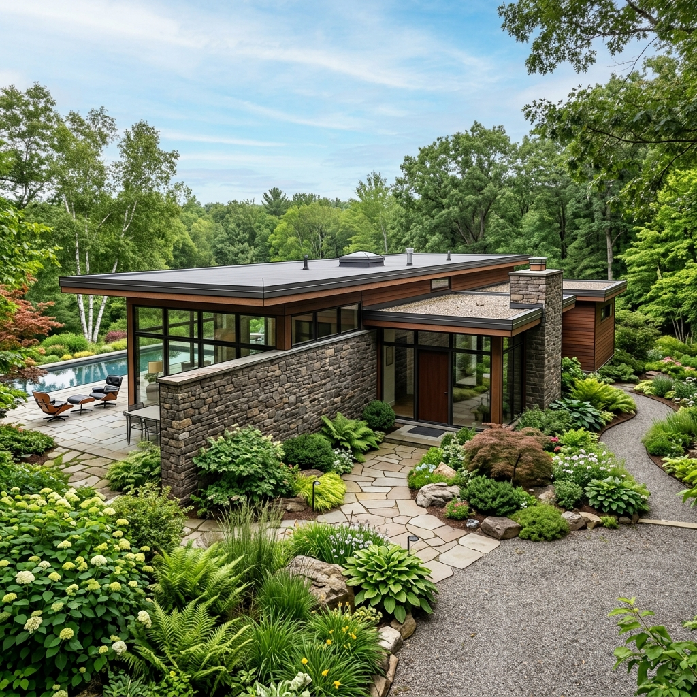

The Reddit post is from late April. Title: "Top 5 AI Rendering Tools for Architects and Designers in 2026." Number one on the list is Rendershop, described as "AI Rendering Built for Architects." The thread has been quoted in three follow-up posts since. Two architects in our network asked us about it the same week.
So we ran the trial. Seven days, real project work. A four-unit infill project in our active queue, mid-DD phase, with seven exteriors and three interiors that needed concept-grade visualization for a planning consultation. Rendershop went head to head against Veras inside SketchUp (our current default) and a Rendair pass on the same geometry.
What Rendershop actually is
Rendershop is a browser-based AI render tool. You upload a SketchUp export, a Revit view, or a rough sketch. You choose a style preset, optionally add a text prompt, and the tool returns a rendered image in roughly 20 to 60 seconds. The interface is clean. The architect-specific style presets are real, not just rebranded Stable Diffusion checkpoints. Categories include residential exterior, multi-family, commercial, hospitality, interior residential, interior commercial, and a small set of landscape and urban scene presets.
Under the hood it appears to be a fine-tuned diffusion model with strong ControlNet conditioning on whatever you upload. The geometry preservation is genuinely good on simple massing. Window placements stay where you put them. Roof pitches survive the render. Cantilevers do not turn into staircases. That is the bar most "AI render for architects" tools fail to clear, and Rendershop clears it cleanly.
The week-long test
The brief: a four-unit timber-frame infill, north light to the courtyard, charred cedar cladding, standing seam metal roof, exposed steel canopy at the entry. Seven exterior views (street elevation, courtyard, two entry approaches, a roof axonometric, a dusk view, a daytime context shot). Three interior views (living, kitchen, primary bedroom). Concept-grade only. Submitted to planning Friday.
Veras handled the same seven exterior views in a parallel pass directly from the SketchUp model. Rendair got the three interiors via its Revit export pipeline. Rendershop ran on all ten via browser uploads.
Geometry fidelity
Rendershop held the geometry on six of seven exteriors. The seventh, a tight cantilever above the entry, was reinterpreted as a simple eave on three of four passes. Veras held it cleanly every time. On interiors Rendershop was middling: the kitchen island lost its waterfall edge twice and became a flat counter; the bedroom kept its window proportions but reinterpreted the millwork. Rendair was tighter on interiors, predictable as it always is when you feed it real BIM geometry.
Material reading
Charred cedar is a known stress test. Rendershop got it correct on five passes, drifted toward generic dark stained wood on two, and produced a beautiful but wrong burned-with-visible-char texture once. Veras was less interesting but more consistent: it reads "charred cedar" as a specific material across its training and applies it deterministically. Rendershop has more range and less reliability, which is a real trade for a concept image and a problem for a material schedule.
Speed and iteration
Rendershop's 20 to 60 second render time is fast. Faster than Veras inside SketchUp on our hardware. The browser interface, however, has no seed control surfaced. That means you cannot iterate on a single image; every "regenerate" gives you a new image. For concept exploration this is fine. For "fix the entry canopy while keeping everything else," it is a real limitation. Veras lets you lock the seed. Rendair lets you lock the seed and the camera. Rendershop does neither.
Where Rendershop earns its place
Pitch decks and competition concept boards
If you need ten different visual directions for a competition shortlist, Rendershop is the fastest path through that work we have tested. The style presets cover enough range that you can produce credibly different mood directions in an afternoon. The output quality is high enough to put in a competition submission without an external retouching pass.
Planning consultation visuals
Our four-unit infill went to planning with five Rendershop exteriors and two Veras exteriors. The planning officer commented on the visualization quality. She did not notice (and there was no reason she should) that the renderings came from different tools. For volumetric mass and material direction, Rendershop is sufficient.
Studio-side ideation, not client-facing iteration
Rendershop is excellent at producing options. It is poor at refining options. The right move in our test was running Rendershop early in the week to surface directions, then handing off the chosen direction to Veras (for exteriors) or Rendair (for interiors) for the refinement passes the client would actually see and comment on.
Where it falls down
No deterministic iteration
Already noted. The missing seed lock is not a minor feature gap; it is the difference between Rendershop being a concept tool and being a billable-work tool. Until that surfaces in the interface, Rendershop sits one tier below Veras and Rendair in our stack.
Interior renderings are weaker than exteriors
The interior presets read more generic than the exterior ones. Materials drift more. Furniture placement is occasionally hallucinated. For interior visualization, Spacely or Rendair both outperformed Rendershop on the same source geometry. If your work is interior-heavy, Rendershop is not the tool.
The "built for architects" claim is generous
Rendershop is built for architectural images. That is not the same as being built for architectural workflow. There is no native Revit, ArchiCAD, Rhino, or SketchUp plugin. Everything goes through browser upload. That cuts you out of the geometry-respecting depth maps and material IDs your modeling software already knows about. Veras inside SketchUp, by contrast, sees your model directly. The "built for architects" tools that actually live where architects work are still the plugin-native ones.
Rendershop, Veras, Rendair
| Capability | Rendershop | Veras | Rendair |
|---|---|---|---|
| Lives inside your modeling software | No (browser upload only) | SketchUp, Revit, Rhino, ArchiCAD | Revit, Archicad, native |
| Seed lock for deterministic iteration | No surfaced control | Yes | Yes |
| Render time per image | 20 to 60 seconds | 45 to 90 seconds | 60 to 120 seconds |
| Style range across presets | High, distinctive presets | Moderate, consistent | Narrow, technically faithful |
| Geometry preservation (complex) | Good on simple, drifts on cantilevers | Excellent | Excellent on BIM geometry |
| Interior quality | Middling | Good | Strongest for furnished interiors |
| Best use case | Concept exploration, competition boards | Production exteriors inside modeler | BIM-driven DD/CD visuals |
Pricing and access
Rendershop runs on a credit pack model with a monthly subscription tier on top. At our usage during the test (roughly 80 renders over seven days, including iteration) we burned through what would have been around $40 of paid credits. The unlimited monthly tier sits at $59. Comparable to Veras (around $35 to $50/mo depending on seat) and below Rendair's BIM-focused pricing. Not free, not expensive, fairly priced for what it does.
Should you adopt it
If you do significant competition or concept work and your studio does not yet have an AI exploration tool, Rendershop is a credible first pick. The browser-based access means anyone on the team can use it without installing plugins, and the preset range is genuinely useful for surfacing directions you would not have prompted yourself.
If you already run Veras inside SketchUp or Rhino and are reasonably happy with it, Rendershop does not replace your stack. It adds a fast exploration layer at the front of your concept work. We will likely keep it for early-week ideation on competition projects and continue to run Veras for the production exteriors clients actually mark up.
If your practice is BIM-first and your visualization needs are DD-grade or above, skip Rendershop. Rendair, Veras, and traditional V-Ray remain the right tools. Rendershop is a concept instrument, not a production one.
Want our full AI rendering stack?
The Veras, Rendair, Spacely and Midjourney workflow Vista Studios runs across concept, DD, and marketing deliverables. Updated monthly.
Read the stack guide →Tested by Vista Studios on a live four-unit infill project. No affiliate relationships with Rendershop, Chaos, or Rendair. All geometry built in SketchUp 2026 and Revit 2026.